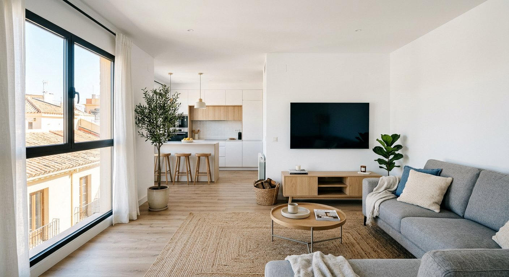

Una reforma integral es la transformación completa de tu vivienda: cocina, baños, salón, dormitorios, instalaciones y acabados, todo coordinado por un único equipo para que vivas el proceso sin estrés.
En Tadelart Reformas hacemos reformas integrales de viviendas en el sur de Madrid con personal propio altamente cualificado, control de todos los oficios y un presupuesto cerrado desde el inicio.
Trabajamos en todos los barrios de Alcorcón: centro, Parque Lisboa, Parque Ondarreta, Santo Domingo, Ensanche Sur, Montepríncipe, Urtinsa y zonas colindantes. Conocemos las tipologías de vivienda habituales en la ciudad —pisos de los años 70 y 80, chalets en la zona sur y nuevas promociones— y sabemos cómo abordar cada reforma conociendo las ordenanzas municipales locales.